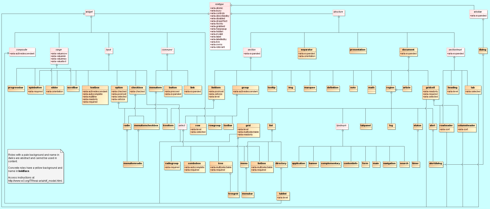
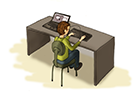
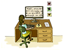
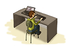
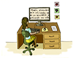
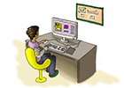
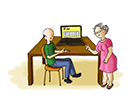
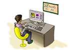
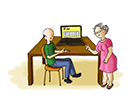

Fazendo a Web falar: HTML5 e WAI-ARIA
Por Vanessa Me Tonini, W3C Brasil
Eu sou...
- Desenvolvedora Web desde 2007
- Tecnóloga em sistemas para Internet pela UNIVALI
- Especialista em desenvolvimento Web pela UTFPR
- Hoje trabalho em projetos de fomento a acessibilidade Web e Open Web no W3C Brasil
No Brasil, o W3C é uma iniciativa do Comitê Gestor da Internet, através do Núcleo de informação e coordenação do .br - nic.br
Conversa franca sobre:
- O que são as RIAs;
- HTML5;
- WAI-ARIA;
- Como utilizar o ARIA + exemplos;
- Porquê acessibilidade na Web?
Rich Internet Application (RIA)
Rich Internet Application (RIA)
- Siginifica: aplicação rica para Internet;
- O termo começou a ser utilizado em meados de 2002 (pela antiga Macromedia) para caracterizar algumas aplicações em Flash;
- São aplicações Web no qual tem características e funcionalidades de softwares do tipo Desktop;
The key difference between a typical Flash site and an RIA is that RIAs possess the functionality to interact with and manipulate data, rather than simply visualize or present it.
A principal diferença entre um site típico em Flash e uma RIA é que elas possuem funcionalidade que manipulam e interagem com dados, ou seja, mais do que simplesmente visualização ou apresentação deles.
HTML5
HTML5
É uma tecnologia aberta, que nesta versão, trouxe para os desenvolvedores uma série de novos recursos e melhorias, que facilitaram a criação e popularização das aplicações ricas para Internet.
HTML5
Nos dias de hoje, navegamos em sites, redes sociais, portais e aplicativos sem ao menos saber que estes contém exemplos práticos de aplicações ricas.
HTML5
- Edição de documentos, planilhas, slides etc (Google Docs ++);
- chats (redes sociais);
- interface para gerenciamento de arquivos em nuvem (dropbox, google drive);
- caixa de email;
HTML5
- reprodução e edição de vídeos e músicas,
- edição de imagens,
- editores de código fonte,
- etc etc etc etc
WAI-ARIA
Web Accessibility Initiative
Desde 1998 o Grupo de Iniciativa de Acessibilidade (WAI) do W3C participa da construção dos padrões para que sejam acessíveis. A primeira grande especificação criada foi o WCAG 1.0 em 1998.
Web Accessibility Initiative
O WCAG hoje está em sua versão 2.0, onde uma de suas características é que nesta versão o documento ficou mais compreensível não só para desenvolvedores mas também para gestores e interessados no assunto.
WCAG: princípios
- Princípio 1: Perceptível
- Princípio 2: Operável
- Princípio 3: Compreensível
- Princípio 4: Robusto
WAI-ARIA
Em 2008, o WAI criou uma especificação para extender os recursos de acessibilidade na Web, especialmente do HTML5 e suas aplicações ricas.
O WAI-ARIA se tornou uma recomendação W3C em março de 2014.
Accessible Rich Internet Applications
"Aplicações ricas e acessíveis para Internet"
Define uma forma de tornar o conteúdo e aplicativos Web mais acessíveis para pessoas com deficiências.
Accessible Rich Internet Applications
Contribui especialmente com conteúdo dinâmico e controles avançados de interface para usuário desenvolvidos com HTML5, Javascript e tecnologias relacionadas.
Como utilizar o WAI-ARIA?
O WAI-ARIA funciona como uma extensão ou framework do HTML5, trabalhando apenas com adição e manipulação dos seus atributos nas tags do HTML.
Estes atributos podem ser do tipo:
WAI-ARIA
rolestateproperty
<form role="search">
<input type="search" role="combobox"
aria-autocomplete="list" aria-owns="sel">
<select id="sel">
<option aria-selected="true">Internet</option>
<option aria-selected="false">Web</option>
<option aria-selected="false">Network</option>
</select>
<input type="submit">
</form>

Diagrama das relações do modelo de dados dos roles.
roles categorization
Atributo
o atributo role faz parte do HTML, e seus valores são especificados pelo WAI-ARIA.
role=""
Roles categorization
Os valores para este atributo estão categorizados como:
- Abstract roles
- Widget roles
- Document structure roles
- Landmark roles
Abstract roles
- Servem para apoiar o papel taxonômico que o WAI-ARIA possuí;
- Propõe definir conceitos gerais para as funcionalidades;
- Papéis abstratos são utilizados para ontologia;
- Não devem ser usados para conteúdo.
Abstract roles (12)
• command • composite • input
• landmark • range • roletype
• section • sectionhead • select
• structure • widget • window
Widget roles
- Agem como componentes autônomos de interface;
- Ou como componentes compostos.
Widget roles: componentes de compostos (9)
Esses papéis tipicamente atuam como recipientes que gerenciam outros componentes de interfaces contidos
• combobox
• grid
• listbox
• menu
• menubar
• radiogroup
• tablist
• tree
• treegrid
Widget roles: componentes de interface (25)
• alert
• alertdialog
• button
• checkbox
• dialog
• gridcell
• link
• log
• marquee
• menuitem
• menuitemcheckbox
• menuitemradio
• option
• progressbar
• radio
• scrollbar
• slider
• spinbutton
• status
• tab
• tabpanel
• textbox
• timer
• tooltip
• treeitem
Document structure roles
- Descrevem as estruturas que organizam o conteúdo;
- Estrutura com conteúdo geralmente não tem interatividade.
Document structure roles (18)
• article
• columnheader
• definition
• directory
• document
• group
• heading
• img
• list
• listitem
• math
• note
• presentation
• region
• row
• rowheader
• separator
• toolbar
Landmark roles
- Pontos de referência de navegação;
- Mapeam partes do site/aplicação;
- Também substituí o antigo "pular para conteúdo".
Landmark roles (8)
• application
• banner
• complementary
• contentinfo
• form
• main
• navigation
• search
states & properties
States & Properties
- Além dos "roles" existem atributos específicos do WAI-ARIA;
- Estes atributos podem ser utilizados em conjunto com o atributo role;
- Os atributos podem ser globais ou específicos.
States & Properties
- Atributos de Widget (função);
- Atributos de Live Region (regiões dinâmicas);
- Atributos de Drag-and-Drop (arrastar e soltar);
- Atributos de Relationship (relacionamento).
Atributos de Widget
- Específicos para elementos de interface de usuário;
- Ideal para GUIs e aplicações ricas;
- São utilizados para apoiar o role do tipo widget.
Atributos de Widget (21)
• aria-autocomplete
• aria-checked (state)
• aria-disabled (state) *
• aria-expanded (state)
• aria-haspopup *
• aria-hidden (state) *
• aria-invalid (state) *
• aria-label *
• aria-level
• aria-multiline
• aria-multiselectable
• aria-orientation
• aria-pressed (state)
• aria-readonly
• aria-required
• aria-selected (state)
• aria-sort
• aria-valuemax
• aria-valuemin
• aria-valuenow
• aria-valuetext
Atributos de live region
- Específicos para regiões de conteúdo dinâmico;
- Servem para indicar o local onde irá receber alterações de conteúdo;
- Habilitam as tecnologias assistivas a perceber se conteúdo da região demarcada foi modificado;
- Podem ser aplicados a qualquer elemento.
Atributos de live region (4)
• aria-atomic *
• aria-busy (state) *
• aria-live *
• aria-relevant *
Atributos de drag and drop (2)
Indicam informações sobre o estado dos elementos de interface que são do tipo arrastar e soltar.
• aria-dropeffect *
• aria-grabbed (state) *
Atributos de relationship
Indicam relações ou associações entre elementos que não podem ser facilmente determinados a partir da estrutura do documento.
Atributos de relationship (8)
• aria-activedescendant
• aria-controls *
• aria-describedby *
• aria-flowto *
• aria-labelledby *
• aria-owns *
• aria-posinset
• aria-setsize
Porquê acessibilidade na Web?
1 bilhão de pessoas...
... com deficiência no mundo.
Estimativa aproximada. Fonte: ONU.
45.623.910 de pessoas
... com deficiência no Brasil.
24% da população.
Fonte: Censo 2010.
Mais de 500 mil, não conseguem exergar de modo algum, no Brasil.
Fonte: Censo 2010.
Quem se beneficía com isto?


 



 




Fonte: Cartilha de acessibilidade na Web. Fascículo 1. W3C Brasil.